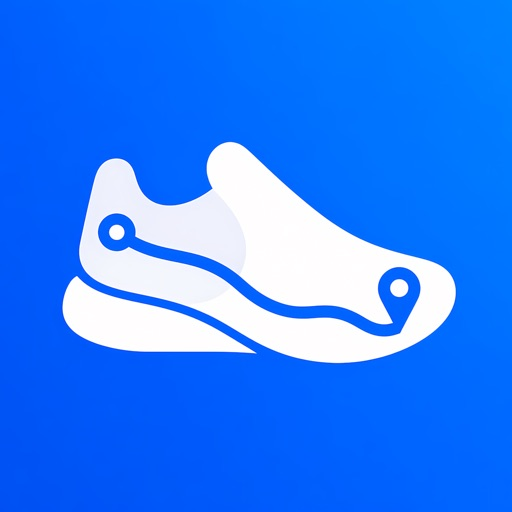
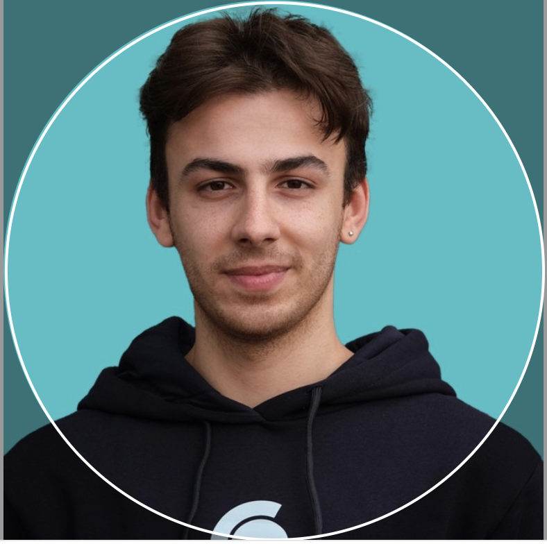
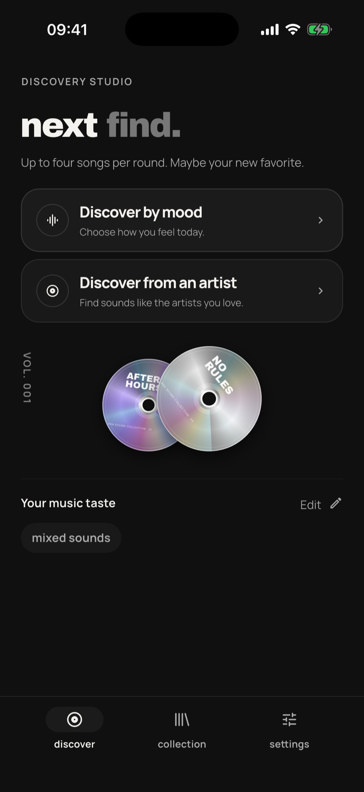
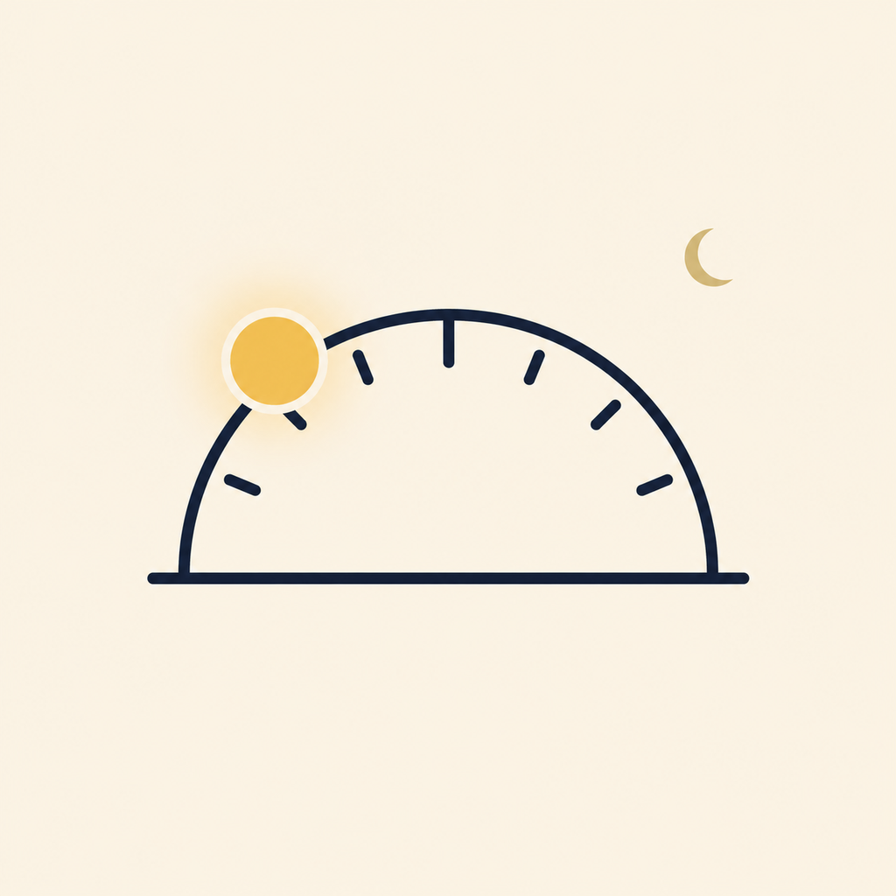

StrideStep JourneyYolculuğun başlasın.
Stride: Step Journey
Günlük adımlarını yeni bir yolculuğa dönüştür.
Merhaba, ben
Yunus Balka
Merak ettiğim fikirleri Flutter ile uygulamaya dönüştürüyorum. Burası, kendi geliştirdiğim uygulamaları ve üzerinde çalıştığım kişisel projeleri paylaştığım yer.
Uygulamalarımı keşfet
KİŞİSEL PROJELERİM
Merakla başlayıp zamanla geliştirdiğim projeler. Yayındaki uygulamaları deneyebilir, açık kaynak çalışmalarımın kodlarına göz atabilirsin.

StrideStep JourneyGünlük adımlarını yeni bir yolculuğa dönüştür.
Kelime öğrenmeyi günlük hayatının bir parçası yap.

Ruh hâline veya sevdiğin bir sanatçıya göre yeni şarkılar keşfet, dinle ve favorilerini koleksiyonuna ekle.

Daily TarotFocusGünlük tarot deneyimi üzerine açık kaynak bir proje.
4 proje gösteriliyor.
GitHub’da daha fazlasıBİR NOT BIRAK
Uygulamalarımdan birini denedin mi? Bir önerin, takıldığın bir nokta
ya da paylaşmak istediğin bir düşüncen varsa bana yazabilirsin.